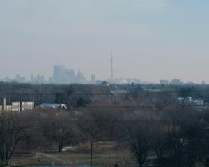

|
Итак, напишу, как мы устроились.
Прежде всего, квартира. Это класс! Три комнаты с весьма интересной планировкой. Две
из них - прямоугольные. А одна (которую мы облюбовали как
спальню) весьма странной формы. Посему купленная спальня смотрится в ней довольно
интересно: такое впечатление, что кровать стоит как-то
под углом. Но это нам жить не мешает. Даже наоборот: у нас никогда не было такой
спальни и такой огроменной кровати. Опять же зеркало и
шкафчики всяческие. Есть куда распихать барохло.
В зал мы тоже прикупили мебель. И мне, наверное, все же удастся, наконец,
реализовать свою мечту в смысле темной мебели. Мягкая мебель у нас
состоит из дивана, кресла и двухместного кресла (не помню, как оно называется).
Все это в голубовато-фиолетово-черных тонах. Стульчики для
столовой тоже приблизительно таких оттенков. А стол к стульчикам - вообще
очаровательный: лакированный под мрамор. Прям заглядение! На
самом деле, будет лучше, когда мы сделаем и отсканируем фотографии (надыбать бы еще
где-нибудь сканер). Вы тогда сможете все рассмотреть толком.
В доме у нас помимо самого дома имеется прачечная, где каждый может за 3$ арендовать
стиральную машину (я пока еще туда не ходила). Но в квартире жильцам не разрешается
устанавливать ни стиральных, ни посудомоечных машин (таковы условия проживания).
Что тут еще есть, мы еще с Андрюшей не разведали. Но особенно нам нравится то,
что от подъезда у каждого жильца имеются ключи, и
жить в этом доме совершенно безопасно: не нужны ни двери железные, ни решетки на
окна. Я вообще ничего подобного здесь еще не встречала :)
Также у каждого в квартире есть пожарная сигнализация, которая чутко реагирует на
любого рода дым. Позавчера у кого-то, видно, что-то
дымилось, и эта чертова сигнализация заверещала на весь дом :) Но, кажись, все
обошлось, хотя пожарные машины приезжали. Выглядят они,
кстати, как большие игрушечные машинки (мы с балкона созерцали): разноцветные и
мигают всякими разными огонечками :)
Вообще, что касается машин: они здесь одна красивее другой. Правда иной раз
встречаются и ржавенькие. Надо сказать, что без машины здесь
действительно тяжко. Мы с Андрюшей знали, что тяжко, но не думали, что до такой
степени! Ибо город построен очень широко: от одного магазина
до другого можно ехать минут 20, а то и больше. Либо на общественном транспорте,
который ходит не иначе как квадратами, посему еще дольше. В
метро здесь всего две ветви, причем, заплатив и войдя в метро, можно тут же
выбраться с другой стороны и сесть на автобус. То есть оплата
производится в одном и том же месте - в подземелье :) Но мы еще не особенно
поднаторели во всех этих тонкостях. Вы не поверите, но в самом
центре города мы еще не были - только с балкона на него смотрим. А все потому,
что очень много было дел.
Самая главная и замечательная новость - это устройство Андрюши на работу.
Устраивался он весьма
прикольно :) Сразу по приземлении в Торонто (прямо в аэропорту) Тема сообщил нам,
что Андрюшу уже ждут в той фирме, где сам он работает, и с
радостью готовы его принять на зарплату N тыс. каксов (канадских баксов) годовых.
Андрюша сначала обрадовался, хотя летел он сюда с мечтами
писать на Яве (это тот программерский язык, готорый мы активно изучали последнее
время и который очень хорошо оплачивается). Но лучше
синица в руках, чем журавль в небе, - рассудили мы с Андрюшей, - тем более что над
нами висит ЦФТ-шный долг за квартиру, и чем быстрее мы
найдем работу, тем быстрее сможем сей долг отдать. Однако, пока мы жили у Кости
(два денька), и Костя, и Света (его жена) пытались убедить нас,
что не стоит так торопиться, и лучше попробовать поискать работу более оплачиваемую.
И, надо сказать, им это удалось (в смысле, убедить).
После этого Андрюша сообщил свое решение Теме (типа отказ). В свою очередь, Темин
босс осведомился у Темы, в чем дело, и сказал, что даст Андрюше на 20 тыс. годовых каксов больше.
Тема тут же звонит Наташе (жене), Наташа радостная прибегает к нам
и сообщает эту ошеломляющую новость. "Да, - сказал
Андрюша, - это уже такая жирная синица, от которой трудно отказаться." :) На
следующий день он сходил на интервью (которое было уже просто
формальностью), и его взяли. Самое прикольное, что через это дело и
Теме увеличили зарплату. Так что счастие подвалило сразу обоим. :) И теперь мы друг друга
усиленно за это обоюдное счастье благодарим :).
Таким образом, вчера Андрюша первый день ходил на работу. Пока он еще входит в суть
дела, изучает то, чем предстоит ему заниматься.
А я тем временем решаю бытовые вопросы: к интернету ходила подключаться, разбиралась
с телефоном и телефонными розетками, с
телевизионными кабелями (чтобы иметь возможность смотреть по телевизору все каналы)
и пр. Сегодня вот сидела ждала, когда нам привезут
компьютерную мебель: стол и стул. С английским, конечно, тяжеловато. Что мне нужно,
я выражаю относительно легко. Гораздо труднее понять,
чего они от меня хотят :) То есть проблемы с пониманием. Но ничего. Наташа Ершова
говорит, что поначалу у всех такие проблемы, и что я еще
молодец, поскольку сама всюду хожу и разбираюсь, не трушу (хотя это сильно сказано :).
Мне кажется, что самое
ужасное начнется, когда я буду предлагать людям себя как работника и с трудом буду
понимать, чего, собственно, они от меня хотят :) Как вроде 15
февраля здесь будет проходить ярмарка труда: когда собираются все работодатели и все
работоискатели с тем чтобы и те, и другие смогли
удовлетворить свои нужды. Надо к этому времени успеть подготовить свое резюме и
раздать его в интересующие меня фирмы. Так что мне в
общем-то тоже есть чем заняться.
Ну да ладно, это все о работе. О чем бы вам еще написать? :)
Например, о магазинах. Магазины здесь все здоровые, с огромным выбором. Особенно
велики так называемые молы, в которых продается почти
все. С непривычки, правда, тяжеловато найти, что тебе нужно :) Иной раз пойдешь в
такой магазин, наберешь того-другого, а, вернувшись домой,
понимаешь, что самое-то главное и не купил. Я это быстро просекла. И теперь хожу в
подобные магазины со списочком, не разбазаривая внимание
на всякие безделушки :) Двери почти во все магазины отворяются сами. Как только ты
подходишь к двери, так сразу она и открывается. А потом
сама закрывается. Я поначалу, по российской привычке, все пыталась закрыть за собою
дверь, дабы не хлопнула :), чем очень веселила Андрюшу и
Тему с Костей. Расплачиваемся мы в магазинах по карточкам. Сначала расплачивались
по временным карточкам, а вчера нам по почте пришли уже
настоящие Royal-банковские карточки, все из себя красивые и рельефные. А старые
карточки якобы нужно покоцать и выбросить :) Что мы и сделали.
Да, еще про магазины и все другие заведения. Здесь всегда думают об инвалидах.
Я полагаю, что и двери открывающиеся для них сделали. Нигде
нет такого, чтобы инвалид на своей коляске не смог куда-либо заехать. Всегда
имеются специальные пологие спуски и подъемы. Поставить
автомобиль на стоянку, предназначенную для машин инвалидов, считается большим
преступлением. И даже если все остальные места на стоянке
заняты, а инвалидов в округе не наблюдается, все равно это место никто не займет.
Вообще тут люди очень приветливые: все извиняются и на
каждом шагу благодарят друг друга :) Водители тоже очень корректные: четко
соблюдают правила дорожного движения, корректно уступают друг
другу и всегда пропускают пешеходов. Я до сих пор к этому привыкнуть не могу.
Обычно (в России), завидев вдали машину, я останавливалась и
ждала, пока она проедет. Здесь я несколько раз пыталась проделать то же самое. Но
машина тоже останавливалась и ждала, когда пройду я, как
бы долго это не длилось. На самом деле, понятно, почему к пешеходам такое отношение.
Их ведь тут совсем мало, и светофоры очень долго не
переключаются, чтобы не стопорить движение. А относительно дорожных правил...
По-моему, их тяжело здесь нарушать. Поскольку все дороги
ровные, всюду нанесены соответствующие разметки. Как нарисовано, так и едь себе на
здоровье. Весьма интересна здесь и книжица с правилами. Я
ее еще толком не читала, но Андрюша говорит, что написана она именно как книжка
повествовательная (со всякими разъяснениями и цветными
картинками), а не как правила, и потому легче усваивается :) Люди говорят, что
теоретический экзамен на права здесь очень легко сдать. А вот
практический экзамен (вождение) якобы никто не сдает с первого раза, ибо он очень
сложен. Если у нас в России от тебя требуется либо только
проехать 5 минут по улице, либо сдать задний ход, то здесь сдавать нужно по полной
программе, и, главное, со всеми парковками (в том числе и
параллельными). Парковки здесь имеют, конечно же, большое значение. По незнанию и
неумению можно разнести все вокруг стоящие машины :) Так
что нахлебаемся еще мы с этими экзаменами. Мы с Андрюшей подумали, что раз у нас
еще не кончился срок, пока мы можем водить здесь машину (2
месяца со дня прибытия, а потом нужно приобретать канадские права), нам неплохо
бы нанять себе инструктора, который все толком покажет и
расскажет. Опять же чтоб иметь возможность попривыкнуть к здешним дорогам.
Водить-то все-равно придется. Хорошо, что Андрюша сейчас
ездит на работу на Теминой машине (20 минут). На общественном транспорте ему
пришлось бы добираться полтора часа. Есть разница? :) Да и я,
еще не понятно, где буду работать.
Как описать сам город Торонто, я даже и не знаю. Центр мы все еще не посетили
(видимо, на следующих выходных). А здесь... Ну вот, например,
район, в котором мы живем, очень близок к центру (даун-таун вместе с самой высокой,
построенной людьми, башней мира виден с
нашего балкона).

Под окнами у нас проходит шоссе. (Это не highway. Поскольку
highway-и здесь навороченные. Многополосные, многоуровненые, с
эстакадами. И жилые дома вряд ли кто-то возле таких дорог построит.) Неподалеку
располагается subway (метро). С другой стороны дома
пролегает железная дорога. И постоянно взлетают и садятся самолеты, поскольку
аэропорт также где-то рядом (километров 40) :) В общем,
тишины у нас тут не наблюдается :) Ну... что хотели, то и получили. Так уж нам
надоело жить в тихоньком, хоть и интеллигентном Академгородке,
когда за всеми радостями жизни приходилось выбираться в город :) Вокруг нашего
здания находятся такие же высотные здания (в которых люди
снимают квартиры), а также здания еще более высотные, которые состоят почти из
одних стекол, - это офисы. Надо сказать, последние
действительно очень красивы, особенно когда сверкают на солнце. Как будто
зеркальные! В округе много деревьев. Но они пока не очень
выделяются, ибо листьев еще нет. Посему деревья серые (только елки зеленые).
И тающий снег всюду лежит. Так что пока взору представляется
довольно-таки неяркая картина. Говорят, весной и летом здесь гораздо красивее.
Вообще говоря, дом наш находится на пересечении трех улиц:
Islington, Bloor и Dundas. Чаще всего нам приходится бывать на Дандасе: здесь
сосредоточены разнообразные офисы и моллы. А в субботу нам
удалось прогуляться и по Bloor street, когда мы ходили за алкоголем к новоселью.
Очень интересная улочка, представляющая собой смесь
западного стиля и европейского. Уютные маленькие магазинчики, кафушки, и в то же
время широкий профиль проезжих частей.
Кстати, об алкоголе. Алкоголь у них просто так во всех подряд магазинах (как в
России) не продают. И киосочков :) здесь тоже нет. Под алкоголь
отведены специализированные магазины. Как тот, который мы посетили. Вин дофига!!!
Всяких разных!! Хочешь французского - идешь к одним
полкам, итальянского - к другим, испанского - к третьим. Вина стоят приблизительно
в диапазоне от 7$ и выше (это в рублях примерно от 100 -
вообще, курс здешнего, канадского доллара к рублю - примерно 15). Это нормально.
А вот водка стоит дорого - 20 с лишним баксов. Мы прикупили
маленькую бутылочку (0.330) Smirnoff за 11$.
Новоселье отпраздновали хорошо. Тесленки подарили нам настольную лампу для
компьютера, а Ершовы - "Круг друзей". Это хоровод глиняных
человечков, внутри которого ставится свечка (набор свечек тоже входит в состав
подарка). И если погасить свет, то на стенах отражаются тени от
человечков, которые ко всему прочему еще и пляшут (от колыхания свечи). :)
Помимо нашего района существует множество других, которые отделены друг от друга
деревьями и мелкими строениями типа частных домов и
небольших магазинов. Есть отдельно построенные комплексы домов типа такого, в
котором живут Костя со Светой. Там конечно же тихо. Машины
заезжают в основном только хозяйские. Люди незнакомые в сей жилкомплекс не заходят
за ненадобностью. И вообще смотрится все это, как в кино.
Мы когда приехали, Костя даже еще не успел убрать новогоднюю гирлянду с крыльца :)
Говорят, все дома были украшены к Рождеству и светились
разными огнями :) Костя со Светой смеются. Говорят, что с такой зарплатой, как у
Андрюши, да еще если я буду работать, мы сможем купить дом и
получше. Правда, нам пока и здесь хорошо :)
О погоде я почти не написала. Погода здесь странная и весьма разнообразная. То вроде
как зима (не сибирская, но все же зима), а то вроде как
совсем весна: все тает, лужи, дождь (я даже зонтик купила). Чувствуется, что Торонто
стоит на равнине, ибо почти всегда ощущается ветер (прям
как в Новосибе). И, видимо, из-за ветра в воздухе не витают выхлопные газы от машин,
а куда-то улетучиваются. Вообще, здешняя экология пока
остается для нас с Андрюшей загадкой. Посмотришь, машин - уйма! А воздух чистый!
Во всяком случае никаких потусторонних запахов мой чуткий
нос пока не учуял. Опять же когда я мыла окна, то поразилась, что грязь смывается
очень легко (нету той липкости и маслянистости, как в
Новосибирске).
Кстати, окна - это отдельная песня. Наташа мне сказала, что окна у них мыть не
принято (хотя чистящие средства и щеточки продаются). Их
конечно моют, но, похоже в момент либо постройки дома, либо в момент сдачи. А сами
жильцы якобы не моют. Мне бы впору обрадоваться,
поскольку я и сама не любитель помыть окна. Раньше мне Андрюша в этом деле сильно
помогал. По мне лишь бы видно было через окно, - и хорошо.
Но даже я подобные окна выносить не могу. К ним же прикоснуться было страшно.
Опять же с внешней стороны у нас балкон. Сам бог велел вымыть.
Устала страшно! Никогда не мыла за один раз такое количество окон.
Зато теперь ляпота! Форточки у нас и балкон все сутки напролет открыты. И
не холодно. Так что о погоде можете судить сами. :)
Народ ходит в курточках и преимущественно без шапок (я думаю, за отсутствием оных :)).
Также почти на всех можно видеть джинсы и кроссовки.
Похоже, буржуи без этого жить не могут. Даже самые жирные (а их тут много) не
комплексуют, а тоже ходят в джинсах и кроссовках. Люди, конечно,
тут отличаются от наших, российских, граждан. Отличаются хотя бы уже
интернациональностью. Много негров, китайцев очень много, индусов, поляков,
югославов, малазийцев.
Отличаются люди и выражением лица, и манерой
держаться, и всем остальным.
Много здесь громадных дядичек. Таких громадных я никогда не видела. Прям руки
большие, ноги большие, задница - вообще кошмар, и большущая
физиономия с очень крупными чертами лица. Откуда они берутся, не понятно. Много, как
я и говорила, толстых (не только в возрасте, но и молодых).
Может быть, это от того, что здешний образ жизни весьма малоподвижен. То ты сидишь в
машине, то на работе, то дома перед телевизором. Даже
для того, чтобы приготовить пищу, особо суетиться не надо, ибо за тебя уже все
сделали. Магазины забиты кучей полуфабрикатов. Захотел
сделать оладушки, - пошел, купил коробочку. Дома развел водичкой и нажарил. Захотел
кексов, - то же самое. Еще и посудины из фольги
прилагаются к упаковочке. Захотел тортик, - пожалуйста! На любой вкус. Есть такие
торты, которые следует хранить только в морозильнике, но
которые при этом не замерзают. Отрезал кусок, остальное - в морозилку. Причем торт
вкусный!!! Я бы не знала, что он покупной, подумала бы, что
домашний! С хорошим кремом! Все, как надо. Захотел пирог (например, с ягодами я
вчера покупала), - купил замороженный полуфабрикат в посудине
из фольги, который дома нужно лишь в духовке разогреть. В общем, вкусностей масса!
И самому ничего не нужно делать. Лопай да толстей :)
Однако, толковые люди уже вовремя распознали сей минус буржуйского образа жизни.
Поэтому и настроили дофига спортивных комплексов,
бассейнов, стадионов, кортов и пр. Так что малость пообвыкнемся и бум спортом
заниматься. Вести активный и здоровый образ жизни :)
Кстати, еще на тему здорового образа жизни. Я наконец-то поняла, почему в забугрундии
относительно мало пьют сильных спиртных напитков
(относительно русских, к примеру). Да просто у них тут столько всего можно выпить
неспиртного, что пока все перепробуешь, забудешь, что такое
алкоголь. Я говорю о разнообразии соков, нектаров, молочных напитков и пр. Вообще,
молочных продуктов очень много. Правда, творога я пока еще
не встречала (даже в русском магазине) (Комментарий от Андрея: видел я творог!
Только нафиг он нужен?! :) ). Причем все продукты очень
качественные. Хотела, например, я на новоселье запечь под майонезом мясо с
баклажанами и помидорами. Да не нашлась, чем полить. В майонезе
ложка стоит, в сметане - тоже. Пришлось как-то выкручиваться :) Майонез, конечно,
здесь не тот :( Да и сметану я больше жиденькую предпочитаю.
Зато молоко - на любой вкус (в смысле процента жирности). У всех других продуктов
тоже качество на высоте. Например, помидоры все большие,
гладенькие, все, как один. Такие же ровненькие и яблоки, и апельсины
(Андрей: вах! А яблоки здесь паааачетные - хрустящие и сладкие! :) ).
Баклажаны и перцы здоровенные (как моя рука до локтя) и тоже нигде не подпорченные.
Я вот и не могу понять никак: то ли у них тут все таким прям
и вырастает, то ли они старательно отбирают товар на продажу. И куда они девают так
называемый брак? Пока что мне все это невдомек. Иной раз
и похуже бы купил, подешевше, а... нету :)
Кстати, в магазины без машины тоже лучше не ездить. Во-первых, есть магазины
подешевле (которые по закону подлости располагаются подальше
от жилища), есть подороже. А во-вторых, народ здесь закупается в пятницу-субботу на
всю неделю вперед. Понятно, что вручную переть все это до
дому из дешевого магазина невозможно, а из ближайшего, но дорогого магазина -
тяжеловато и дороговато. Так что придется нам пока падать на
хвост Теме с Наташей. Как мы набрались прошлый раз! :) Тихий ужас! Это мы как раз
только въехали в квартиру и вечером поехали с Ершовыми в
супермаркет, дабы, как и все порядочные граждане, забить холодильник на неделю
вперед (Андрей: вах, а какой у нас холодильник - это что-то - в
него можно самому зайти, да еще и кресло поставить :)). Взяли, как и полагается,
тележку на колесиках и с верхом ее нагрузили. Кстати, у них возле
касс лежат специальные большие коробки. В коробку можно сгрузить все, что набрал,
и на тележке довезти до машины. Все бы ничего, но как
Андрюша с Темой перли эту коробку из гаража до лифта, - это надо было видеть! :)
Мы с Наташкой только и успевали подхватывать на лету
вываливающиеся из донышка коробки всякие закупочки :) Смеху было много! Андрюша,
правда, после этого сказал, что жрать вредно :) Но я думаю,
что больше мы не будем так много всего покупать. Просто у нас ведь не было ничего:
ни сахара, ни соли, ни муки, ни даже стаканчиков водички
испить.
Ой... Такое у меня ощущение, что все я никогда не успею описать...А время идет, еще
и резюме ваять нужно когда-то :) Так что, наверное, на этом я
свое послание буду оканчивать. До следующего уж раза.
Счастливо!
Следующее письмо- Письмо 3
|
{kind=link}